Back
 JavaScript
JavaScript
 Bootstrap
Bootstrap
About the System
InfoTranSys is a web-based transaction management system developed to modernize and improve the services of the University Cashier's Office and Dean's Offices by reducing long waiting lines, minimizing manual processes, and providing a faster and more organized transaction experience for students and university personnel. The system serves as a centralized platform where students can conveniently submit requests, monitor the status of their transactions, and receive updates without the need to repeatedly visit university offices.
Build With
PHP
JavaScriptCSS
HTML
PHPMyAdmin
MySql
BootstrapPhotos
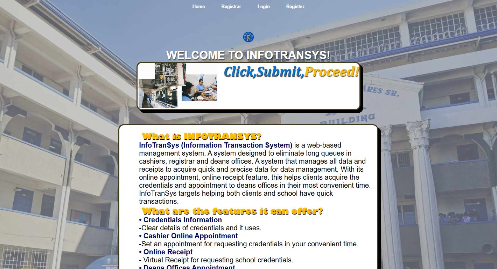
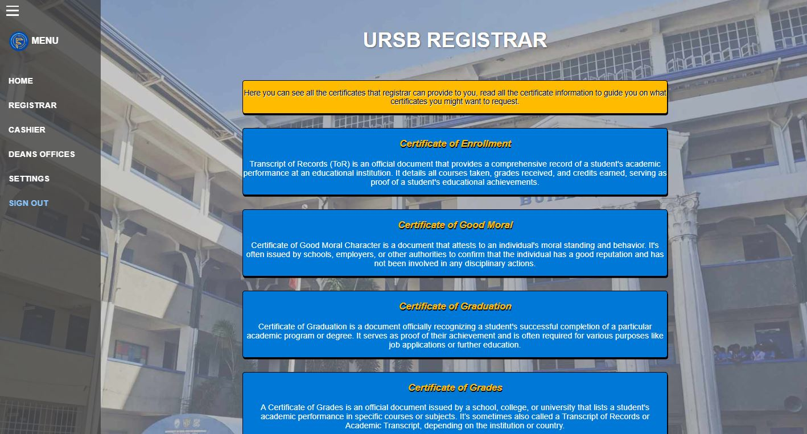
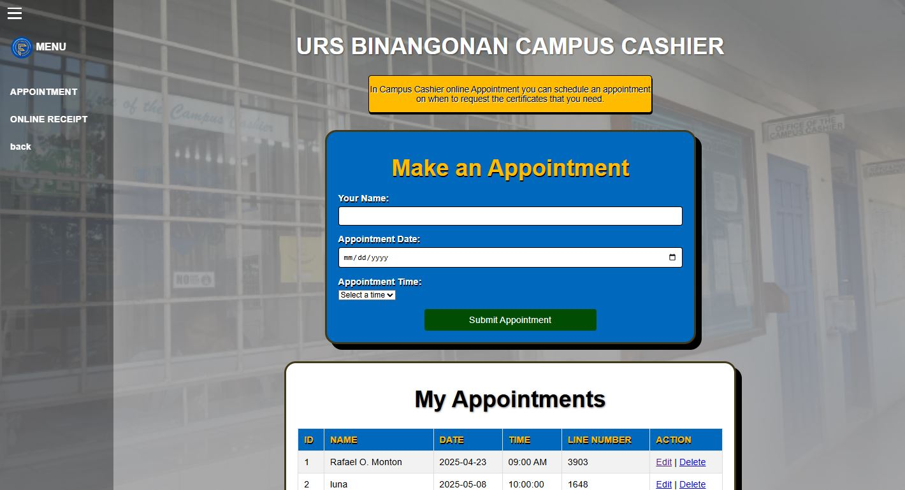
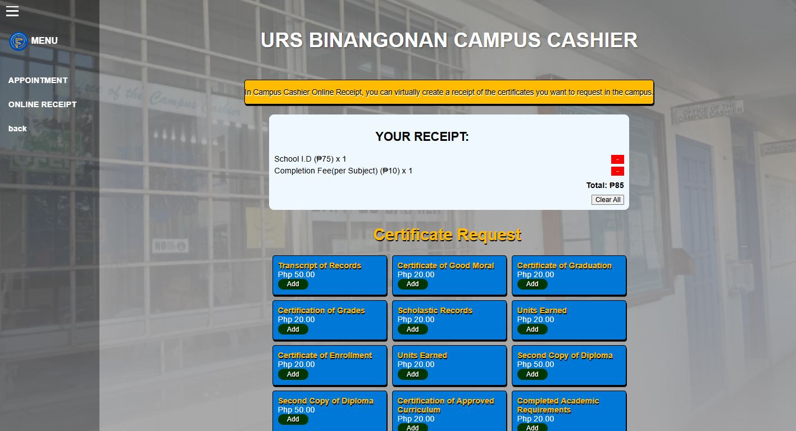
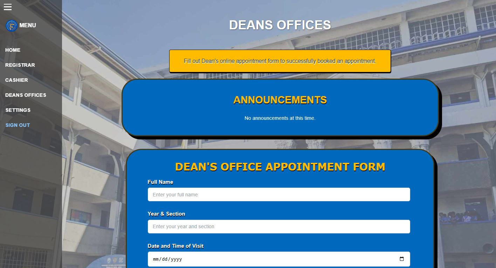
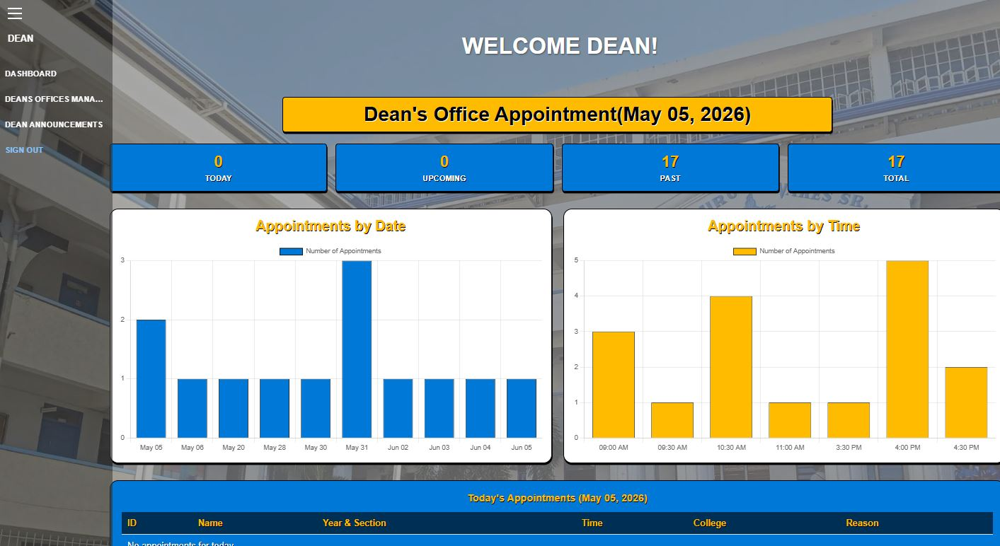
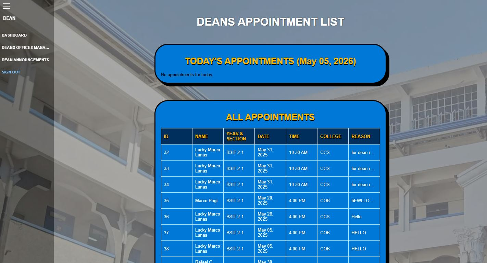
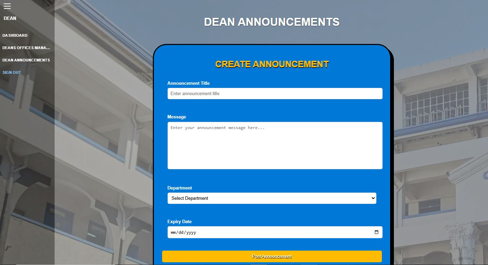
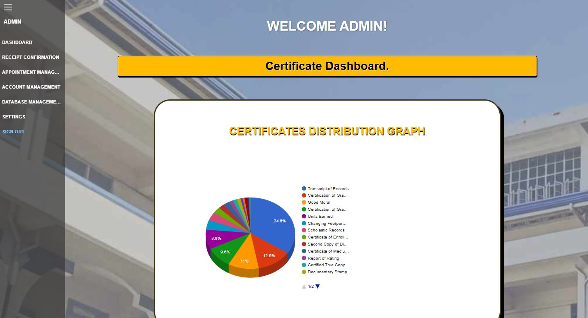
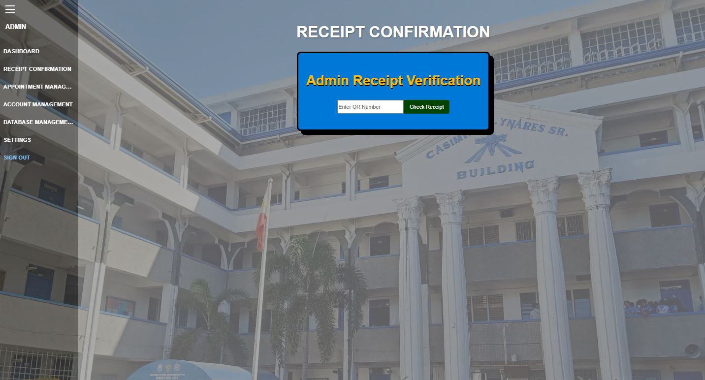
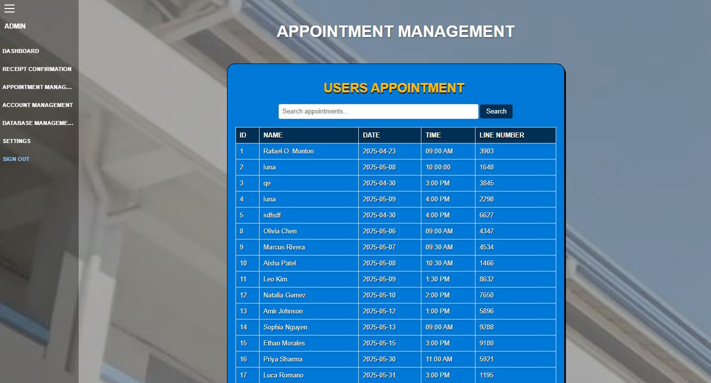